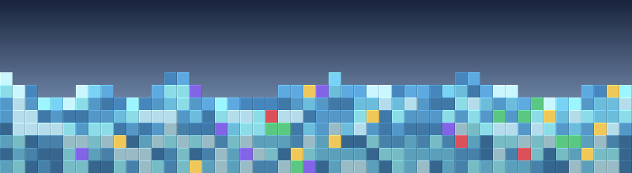

Crystalline worlds

Stylised banner using the world's voxel palette — not an in-game screenshot.
Worlds with glass and crystal terrain. Gem-bearing layers.
- Biome set
- crystalline_biomes
- Distribution
- crystalline_voxels
- Biome regions
- 28
- Voxel layers
- 8
- Unique ores
- 8
- Known planets
- None confirmed — most planets pick biomes procedurally and can't be linked to a single world type from the static configs.
Ores you can find here
Aggregated from every layer in this world's distribution. Frequency is the sum across layers (higher = denser); vein size is the largest m_extent seen; deepest Y is the lowest m_startY a layer with this ore occupies (lower Y = closer to the planet core).
| Voxel | Layers | Total freq | Max vein | Deepest Y |
|---|---|---|---|---|
| Diamond | 5 | 128 | 100 | 0 |
| Emerald | 5 | 128 | 100 | 0 |
| Ruby | 5 | 128 | 100 | 0 |
| Sapphire | 5 | 128 | 100 | 0 |
| Coal | 6 | 56 | 100 | 30 |
| Aluminium | 5 | 48 | 90 | 30 |
| Copper | 5 | 48 | 90 | 30 |
| Iron | 5 | 48 | 90 | 30 |
Layer-by-layer breakdown
Each layer is a Y band (voxel altitude). The engine fills the band with whatever's in m_voxels (stone-class blocks) plus m_ores entries (the rare resource nodes). Layers are listed top-down — Y 256 is open sky, low Y is bedrock.
Layer 0 · Y 200 … 256 (4 voxels, 8 ore types)
Layer 1 · Y 155 … 200 (4 voxels, 8 ore types)
Layer 2 · Y 135 … 155 (3 voxels, 5 ore types)
Layer 3 · Y 105 … 135 (3 voxels, 4 ore types)
Layer 4 · Y 45 … 105 (3 voxels, 4 ore types)
Layer 5 · Y 30 … 45 (3 voxels, 4 ore types)
Layer 6 · Y 15 … 30 (3 voxels, 4 ore types)
Layer 7 · Y 0 … 15 (3 voxels, 4 ore types)
Biome regions
Biomes are picked at runtime by temperature × altitude. The same world type can host any of these climate-zone variants on any single planet.
| Biome | Temp range (°) | Altitude range |
|---|---|---|
| Arctic mountains crystalline_arctic_mountains |
-50 … -10 | 70 … 150 |
| Tundra mountains crystalline_tundra_mountains |
-10 … 0 | 70 … 150 |
| Taiga mountains crystalline_taiga_mountains |
0 … 10 | 70 … 150 |
| Temperate mountains crystalline_temperate_mountains |
10 … 20 | 70 … 150 |
| Tropical mountains crystalline_tropical_mountains |
20 … 30 | 70 … 150 |
| Savanna mountains crystalline_savanna_mountains |
30 … 40 | 70 … 150 |
| Desert mountains crystalline_desert_mountains |
40 … 150 | 70 … 150 |
| Arctic hills crystalline_arctic_hills |
-50 … -10 | 30 … 70 |
| Tundra hills crystalline_tundra_hills |
-10 … 0 | 30 … 70 |
| Taiga hills crystalline_taiga_hills |
0 … 10 | 30 … 70 |
| Temperate hills crystalline_temperate_hills |
10 … 20 | 30 … 70 |
| Tropical hills crystalline_tropical_hills |
20 … 30 | 30 … 70 |
| Savanna hills crystalline_savanna_hills |
30 … 40 | 30 … 70 |
| Desert hills crystalline_desert_hills |
40 … 150 | 30 … 70 |
| Arctic plains crystalline_arctic_plains |
-50 … -10 | 0 … 30 |
| Tundra plains crystalline_tundra_plains |
-10 … 0 | 0 … 30 |
| Taiga plains crystalline_taiga_plains |
0 … 10 | 0 … 30 |
| Temperate plains crystalline_temperate_plains |
10 … 20 | 0 … 30 |
| Tropical plains crystalline_tropical_plains |
20 … 30 | 0 … 30 |
| Savanna plains crystalline_savanna_plains |
30 … 40 | 0 … 30 |
| Desert plains crystalline_desert_plains |
40 … 150 | 0 … 30 |
| Arctic lake crystalline_arctic_lake |
-50 … -10 | -256 … 0 |
| Tundra lake crystalline_tundra_lake |
-10 … 0 | -256 … 0 |
| Taiga lake crystalline_taiga_lake |
0 … 10 | -256 … 0 |
| Temperate lake crystalline_temperate_lake |
10 … 20 | -256 … 0 |
| Tropical lake crystalline_tropical_lake |
20 … 30 | -256 … 0 |
| Savanna lake crystalline_savanna_lake |
30 … 40 | -256 … 0 |
| Desert lake crystalline_desert_lake |
40 … 150 | -256 … 0 |